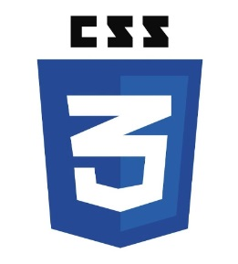

Financial services professional with experience in sales, marketing, credit investigation, collections, branch operations, business development, and customer service committed to balancing company goals while maintaining work excellence towards customers
UNIVERSIDAD DE DAGUPAN (formerly COLEGIO DE DAGUPAN)
Dagupan City, Pangasinan, Philippines
College of Arts, Sciences and Education
BACHELOR OF SECONDARY EDUCATION Major in English
June 2005 - October 2009
FUNDLINE FINANCE CORPORATION
Dagupan City, Philippines
Jan. 2020 – Jan. 2022
Customer Management Associate
Visit the customers on a regular basis to create and help build long- term business relationship.
Resolve customer concerns and complaints.
Follow-through to expedite resolution of customer problems to maximize satisfaction and ensure retention.
Conduct sales campaign on different locations within identified sales territory.
Identify target market or potential clients and assess the financial
needs through an initial
interview using the 4Cs of credit.
Promote, present, and sell products and services to existing and prospective customers.
Forecast sales and identify strategies that are aligned with the activities of the branch assigned to achieve target.
Assess, create strategies, and conduct activities that aim to grow the existing customer portfolio.
Collect the daily dues and past dues from his area of assignment to ensure achievement of target and maintain a positive customer cash flow.
Conduct recovery of payment through repossession of collaterals to maximize the financial resources of the company.
Trace delinquent and missing customers to their new address and update the profile and serve notice to enforce collection.
Advice customers of necessary actions and strategies for debt payment.
Comply and adheres to all policies regarding company assets resources, especially cash and cash-related paraphernalia, including but not limited to official receipt of collectionsand expenses in all branch transactions.
Prepare all relevant documents for endorsement to Branch officer including recommendation for write-off and small claims court.
AL OTAIBA COMMUNICATIONS
Dubai, United Arab Emirates
Oct. 2013 – Mar. 2014
Sales Promoter / Technical Support
Handled calls requiring technical assistance.
Configured routers thru remote access to their network.
Promoted products thru telemarketing and website inquiries.
SUMISHO MOTOR FINANCE CORPORATION
Dagupan City, Philippines
Sept. 2010 – Sept. 2013
Credit and Marketing Associate
Handled, proposed and executed marketing activities that will generate applications.
Performed credit investigation to credit applicants.
Generated credit investigation reports that adhere to the Five Cs of credit.
Provided excellent customer service pre- sale and post-sale.
Starting to learn but I am still a work in progress
Starting to learn but I am still a work in progress
Starting to learn but I am still a work in progress